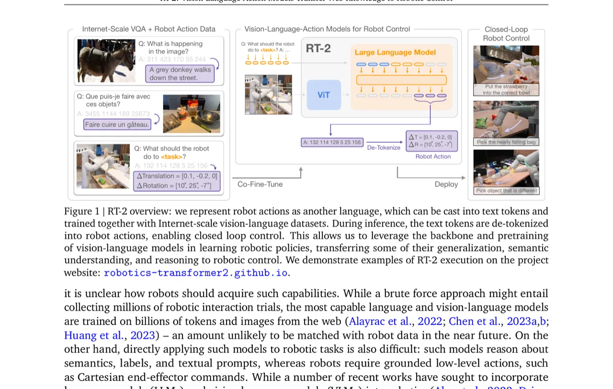
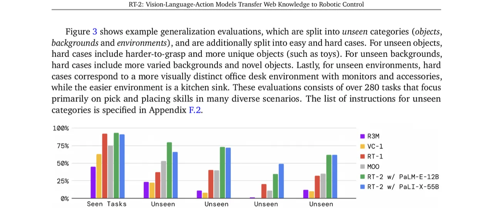
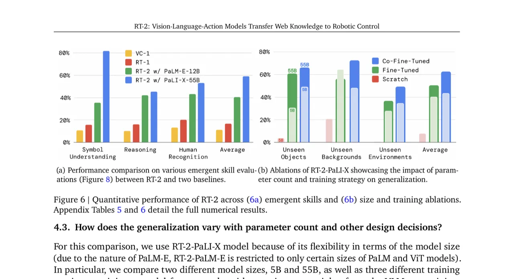
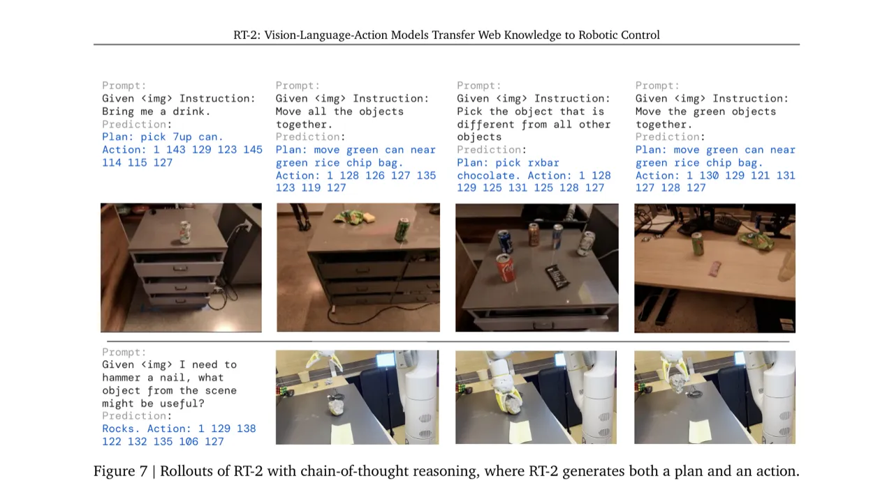

RT-2 提出了一类新型模型——视觉-语言-动作模型（Vision-Language-Action, VLA）：将机器人动作表示为文本 token，与互联网规模的视觉-语言任务联合微调，使单一端到端模型既能执行操作任务，又能从网络预训练中继承突现式语义推理与强泛化能力。在超过 6,000 次真实机器人评估中，RT-2 相比先前基线实现了约 2× 的泛化提升，以及超过 3× 的突现能力提升。
现有机器人控制方法往往将视觉-语言模型（VLM）仅用于高层规划，底层动作执行依赖独立的控制器，无法享受互联网规模预训练带来的丰富语义知识。另一方面，直接用海量机器人数据追赶 VLM 的训练量几乎不可能实现。那么，能否将大规模预训练 VLM 直接整合进闭环机器人控制，从而提升泛化能力并使突现式语义推理成为可能？
"can large pretrained vision-language models be integrated directly into low-level robotic control to boost generalization and enable emergent semantic reasoning?"

RT-2 的核心思路极为简洁：将机器人动作表示为文本 token，并将其以与自然语言 token 完全相同的方式加入 VLM 的训练集，实现"动作即语言"的统一输出空间。在此基础上，通过联合微调（co-fine-tuning）同时使用机器人轨迹数据与原始互联网视觉-语言数据，防止灾难性遗忘并保留 VLM 预训练知识。
机器人动作空间包含 6-DoF 末端执行器位移/旋转、夹爪开合和终止命令，共 8 个维度。连续维度被均匀离散化为 256 个 bin，整个动作向量拼接为一串整数字符串，例如："1 128 91 241 5 101 127"。对于 PaLI-X，直接复用表示整数的已有 token；对于 PaLM-E，则将 256 个使用频率最低的 token 覆写为动作词表——这本质上是一种 symbol tuning。VLM 以标准 VQA 格式接受输入："Q: what action should the robot take to [task instruction]? A:"，输出对应动作 token 串。
实验表明，仅用机器人数据微调（naive fine-tuning）会导致 VLM 遗忘预训练语义知识，泛化能力下降。RT-2 的关键训练细节是在每个 batch 中混合机器人数据与原始互联网视觉-语言数据，并通过上采样机器人数据集来平衡比例。这使模型在低层次机器人动作与抽象视觉概念之间保持双向兼容。
55B 参数的 RT-2-PaLI-X 无法在桌面 GPU 上实时运行。论文采用多 TPU 云服务部署模型，机器人通过网络查询该服务。RT-2-PaLI-X-55B 控制频率为 1–3 Hz；5B 版本约 5 Hz。据作者所述，这是目前直接用于闭环机器人控制的最大模型，超过此前同类方法达一个数量级以上。
在 RT-2-PaLM-E 上，仅用数百步梯度更新的数据增强，即可让模型先以自然语言生成"Plan"步骤，再输出动作 token，例如："Instruction: I'm hungry. Plan: pick rxbar chocolate. Action: 1 128 124 136 121 158 111 255."这一扩展使模型能应对更复杂的多步语义推理指令。
实验在真实 7-DoF 移动机械臂上进行，共完成约 6,000 条评估轨迹。基线包括：RT-1（35M 参数 Transformer）、VC-1（预训练表征 + RT-1 骨干）、R3M（预训练表征）、MOO（VLM 生成语义地图后接 RT-1）。评估分为两大类：(1) 在见过/未见过的物体、背景、环境中的泛化；(2) 突现能力（symbol understanding / reasoning / human recognition）。

| 模型 | Language-Table 成功率 |
|---|---|
| BC-Zero (Jang et al., 2021) | 72 ± 3 |
| RT-1 (Brohan et al., 2022) | 74 ± 13 |
| LAVA (Lynch et al., 2022) | 77 ± 4 |
| RT-2-PaLI-3B（本文） | 90 ± 10 |
在开源 Language-Table 仿真环境中，RT-2-PaLI-3B 达到 90 ± 10% 成功率，远超此前最佳的 LAVA（77 ± 4%）。


针对 RT-2-PaLI-X，论文比较了三种训练方案：从零开始训练（scratch）、仅机器人数据微调（fine-tune）、联合微调（co-fine-tune）；以及两种规模：5B 和 55B。主要结论：
RT-2 虽然能以新方式部署已有操作技能，但不会从 VLM 预训练中习得全新的运动能力。模型的物理技能仍局限于机器人数据所覆盖的技能分布（如拾取、放置等）。作者指出，一个有前景的方向是通过人类视频等新数据范式扩展技能多样性。
55B 参数模型需要多 TPU 云服务支撑，控制频率仅 1–3 Hz，无法满足要求高频控制的任务。论文指出，量化（quantization）和蒸馏（distillation）是值得探索的方向，以期在更低成本硬件上实现更高频率推理。
构建 VLA 模型需要对 VLM 进行微调，而目前可公开微调的大型 VLM 数量非常有限。论文表达了对更多开源 VLM（如 LLaVA）出现以及商业模型开放微调 API 的期待，认为这是推广 VLA 方法的必要前提。